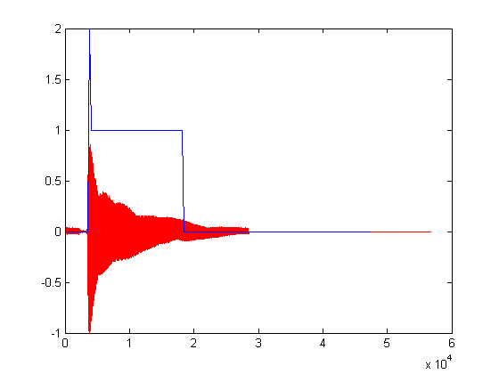
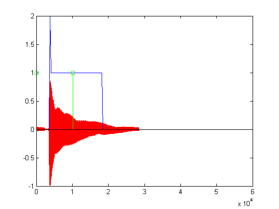

Contents
****** INICIALIZACION ******** %
clc;
clear all;
close all;
% Asigno a filename (variable) la ruta del audio a analizar
%filename = 'GUITARRA_cut.wav';
%filename = 'evil8k.wav';
%filename = 'test150nps.wav';
%filename = 'b_8_k.wav';
filename = 'G_2_8k';
%filename = 'A1.wav';
%filename = 'aun_ma_rriba.wav';
% Agrego las rutas a usar al Workspace
addpath('D:\UTN\DPLAB\Grupo_Audio\repositorio_svn - copia\mFunction'); % Ruta de funciones auxiliares *.m
addpath('./funciones/'); % Ruta de funciones auxiliares *.m
addpath('C:\Users\Pablo\Desktop\Pitch Detection');
addpath('C:\Users\Agus\Dropbox\DPLabUTN\Audios algunos\guitarra 24bits 44100Hz');
addpath('C:\Users\Agus\Dropbox\DPLabUTN\Audios algunos\8K');
addpath('C:\Users\Agus\Dropbox\DPLabUTN\Audios algunos\guitarra 24bits 44100Hz\a 8 k');
addpath('C:\Users\Agus\Dropbox\DPLabUTN\partitura v14 05-06-15\funciones\funciones auxiliares');
addpath('C:\Users\Agus\Dropbox\DPLabUTN\partitura v14 05-06-15\funciones\Pitch Detection');
addpath('C:\Users\Agus\Dropbox\DPLabUTN\Audios algunos');
% carga de archivo
[in, fs] = wavread(filename);
% Asignacion de valores a las variables intervinientes en funcion de
% las caracteristicas del archivo
% window_len es cantidad de muestras a analizar (bloque)
% salto es el desplazamiento respecto a la primer muestra del bloque
% analizado con anterioridad, a partir del cual se comforma el segundo
% bloque de analisis
if fs == 44100
window_len = 2048; % puede funcionar con 4096 (y salto de 1024)
salto = 512; % puede funcionar con 1024 (y w_len de 4096)
elseif fs == 22050
window_len = 1024; % puede funcionar con 4096 (y salto de 1024)
salto = 256; % puede funcionar con 1024 (y w_len de 4096)
else %if fs == 8000
window_len = 1024;
salto = 256;
end
in = in(:,1); % se toma un solo canal
in = in / max(abs(in)); % escalamiento entre -1 y 1
in = Complete_vector(in', window_len)'; % zero padding hasta que el largo de in sea divisible por window_len
Warning: Directory permission denied: D:\UTN\DPLAB\Grupo_Audio\repositorio_svn - copia\mFunction Warning: Name is nonexistent or not a directory: C:\Users\Pablo\Desktop\Pitch Detection
****** DURACION ******** %
nota = []; % guarda 2, 1 o 0 indicando Ataque, Sustain y Silencio nota_x = []; % guarda las posiciones de los eventos antedichos for i = 0:(length(in)/window_len)-10 for j = 0:salto:window_len-salto clc; aux = dur_prueba_v2(in,i,j,window_len,fs, 0); % Algoritmo que estima la duracion (carpeta funciones) nota = [nota aux]; % Concatenacion de eventos nota_x = [nota_x (window_len*i)+j+512]; % Concatenacion de las posiciones de ocurrencia de los eventos end %waitforbuttonpress; end disp(['fs = ' num2str(fs)]); % impresion de frecuencia de muestreo
fs = 8000
****** PLOT DURACION ******** %
nota = opt_dur(nota); % Optimiza duracion (carpeta funciones) figure(1); hold off; plot(in,'r'); hold on; plot(nota_x, nota,'b'); set(gcf,'name',filename,'NumberTitle','off'); %axis(ax1, [0 window_len*length(nota) -1 2]); %linkaxes([ax1 ax2], 'x'); % Linkea ejes %sound(in,fs);
****** SELECCION DE BLOQUES PARA DETECCION DE TONO ****** %
La deteccion del tono depende integramente de la estabilidad de la informacion del bloque a analizar queriendose evitar sectores con ataques o decaimiento, el siguiente proceso seleccionara dichos bloques para facilitar la estimacion del tono
f_empieza = 0;
f_yadetecte = 0;
tam_detect = 2048 / salto;
j = 1;
in_detect = zeros(2048, length(nota));
in_detect_x = zeros(length(nota),1);
for i = 1:length(nota)
if nota(i) == 2
in_detect_x(j) = nota_x(i); % Posicion de inicio de la nota
elseif nota(i) == 0
if in_detect_x(j) > 0
lim = nota_x(i); % Posicion de inicio de la nota
lim = lim - in_detect_x(j) - 2048;
lim = lim*(1/2);
in_detect_x(j) = in_detect_x(j)+lim;
in_detect(:,j) = in(in_detect_x(j):in_detect_x(j)+2048-1,1);
j = j+1;
end
end
end
stem(in_detect_x, ones(length(in_detect_x),1),'g');
 ******* DETECTOR ********** %
[~,n_notas] = size(in_detect); for index=1:n_notas FindPitch(in_detect(:,index)',fs,80); % llamado a deteccion de tono (carpeta funciones\Pitch Detection) waitforbuttonpress; end
nota = fa_3 frecuencia = 173.8281
Error using waitforbuttonpress
Interrupted
Error in main (line 131)
waitforbuttonpress;
******* FIN ********** %
disp(' '); % Deja un ENTER al terminar